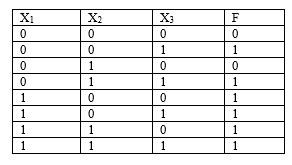

Практическая работа №2
Тема: переход от логической формулы к таблице истинности.
Дидактическая цель: закрепить теоретические знания по основам математической логики и выработать практические навыки по заполнению таблицы истинности по логической формуле.
Литература:
1. Еловенко Н.А. Дискретная математика. Учебное пособие. – Волгоград. ГОУ СПО ВЭТК. 2008. Главы 2, 3.
Ход занятия:
1. Проверка теоретической подготовки студентов (три вида представления логической функции, переход от одного вида представления ЛФ к другому, совершенные формы представления функции).
2. Инструктаж преподавателя о ходе выполнения работы.
3. Выполнение работы с использованием методических указаний по вариантам.
4. Защита практической работы с ответами на контрольные вопросы (устно).
5. Подведение итогов и оценка работы каждого студента.
Порядок выполнения работы:
1. Ознакомиться с примером решения.
2. Решить задания, соблюдая порядок оформления примера и оформить отчет (номер, тема и цель практической работы, решение задания по варианту, вывод).
3. Подготовить ответы на контрольные вопросы, сделать вывод и предъявить отчет преподавателю.
Пример решения задания №1:
f = x1 & x3 x1 & x2 & x3 x1 & x2
1. Подставляем значения переменных построчно в функцию и подсчитываем результат:
f = 0 & 0 0 & 0 & 0 0 & 0 = 1&1 0&1&0 0 =1 0 0 = 0 0 0=0
f = 0 & 1 0 & 0 & 1 0 & 0 = 1 0 0=1
f = 0 & 0 0 & 1 & 0 0 & 1 =0 0 0=0
f = 0 & 1 0 & 1 & 1 0 & 1= 1 0 0=1
f = 1 & 0 1 & 0 & 0 1 & 0 = 1 0 0=1
f = 1 & 1 1 & 0 & 1 1 & 0 = 1 1 0 =1
f = 1 & 0 1 & 1 & 0 1 & 1 = 1 0 1=1
f = 1 & 1 1 & 1 & 1 1 & 1 = 1 0 1 =1
2. Заносим полученные результаты в таблицу истинности

Задание 1: составить таблицу истинности по логической формуле
1 вариант 2 вариант 3 вариант
f = x1 & x3 x1 & x2 & x3 x3
f = x1 & x3 x1 & x2 x1
f = x1 & x3 x1 & x2 & x3 x3
f = x1 & x3 x2 & x3 x3
f = x1 & x3 x1 & x2 & x3 x3
f = x1 & x3 x1 & x3 x2
Контрольные вопросы: Описать процесс перехода из одного вида представления логической функции в другой, описать совершенные формы представления логической функции и процесс их записи.